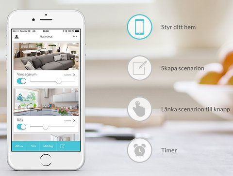
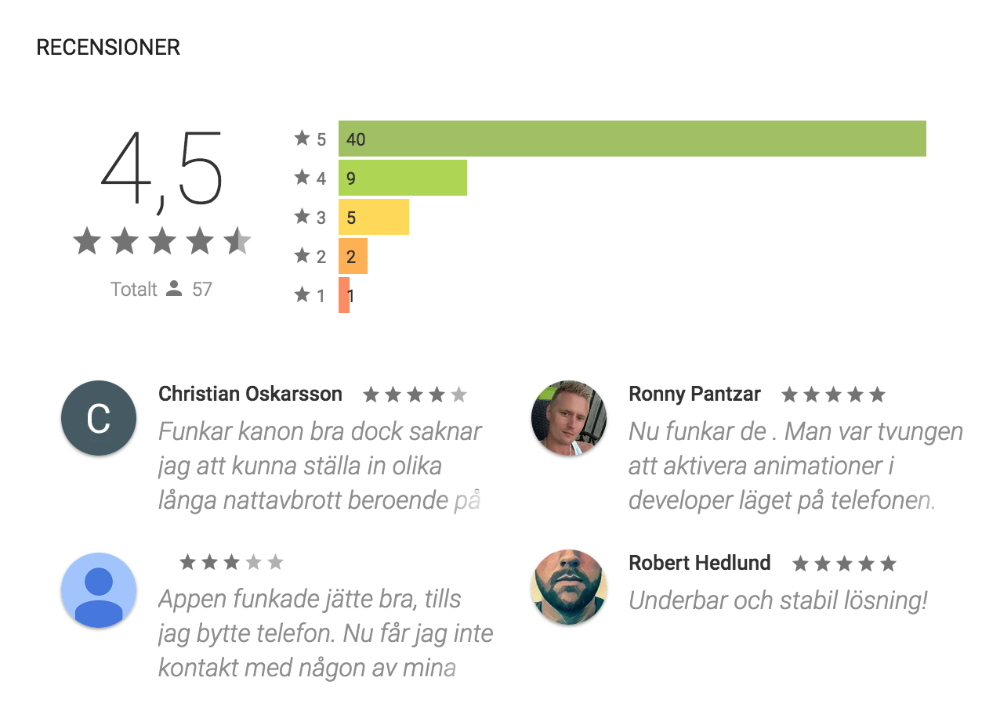
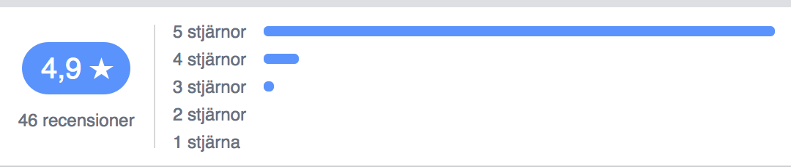
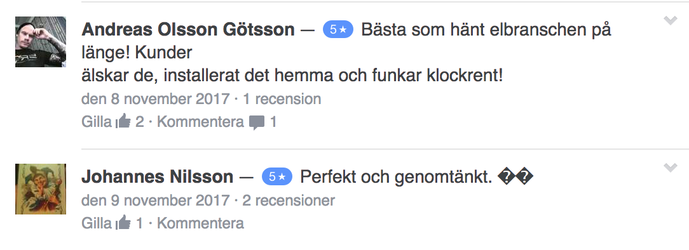

Smart belysning
Vill du kunna styra belysningen från din mobil? Eller ha möjlighet till smarta tidsstyrningar?
Då är Plejd dosdimmer förmodligen något för dig.

Du installerar den antingen bakom en vanlig tryckknapp eller så köper du till en dimmerratt och den fungerar precis som en vanlig dimmer förutom att du även har möjlighet att styra belysningen via din mobil. Denna dimmer har blivit otroligt populär tack vare den höga kvalitén och ett pris som inte är så mycket högre en en vanlig dimmer.
Recensioner från app store:
Recensioner från google play:
Recensioner från Facebook:
 Hitta bästa pris här
För en kort introduktion till plejds produkter:
En lite mer ingående recension av plejd:
En väldig uppskattad funktion är det inbygga astrouret vilket är ett perfekt sätt att styra utomhusbelysningen. Om du aktiverar astrouret så tänds belysningen automatiskt när solen går ner och släcks när solen går upp.